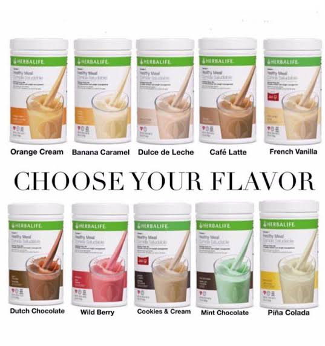

The herbalife shake a healthy shake that has a lot of nutrients that keeps the drinker very healthy. It is a breakfast shake that is drank in the morning just to help a person start off his or her day in a healthy way before eating anything else. It has a lot of flavours so it depends on a person, they get to choose the flavour that they prefer. It is a source of fibre, it's gluten free, known to be suitable for vegans. It contains different fruits, vegetables and spices. It has 24 vitamins and minerals. The bet thing about it is that it does not contain any artificial colourant and also no artificial flavourings.